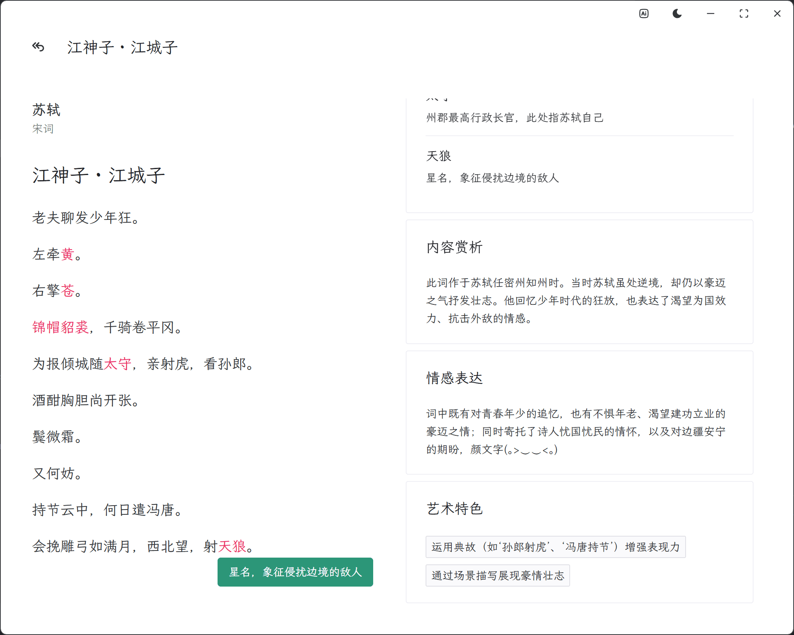

全诗词
免费诗词查询 & AI赏析工具
Github
诗词数据库
诗词数据基于
Chinese-Poetry
。
收录常见分类的超过34万首诗词作品：
唐诗/宋诗
311855
宋词
21053
元曲
11057
诗经
305
楚辞
65
五代诗词
542
论语
20
曹操诗集
26
搜索功能
基于SQLite FTS5实现快速检索
支持按
标题、作者
搜索
暂不支持诗句内容搜索
支持拼音首字母搜索
AI赏析功能
提供词汇注释、内容解析
分析情感表达和艺术特色
可自定义AI解析风格
支持配置自己的AI模型

自定义配置AI
其他特性
亮色/暗色主题切换
简洁无广告界面
完全免费使用
注意：
部分诗词仅提供繁体版本，暂未完全校对。
这是一个功能纯粹的个人项目，还处于开发之中，适合诗词爱好者随手查阅。
软件暂时支持Windows版本下载，其它版本可以自行编译下载。
下载/使用全诗词